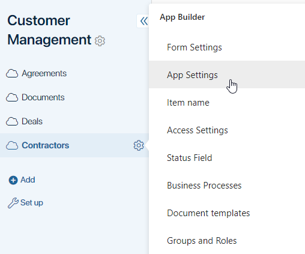
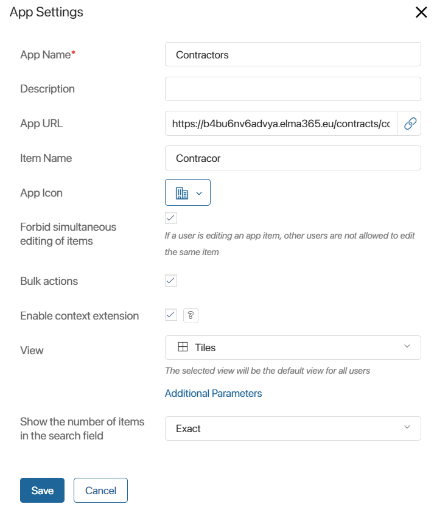

In the app settings, you can change the app name, describe its purpose, or select a different icon for it. You can also edit the name of app items, change item layout, and enable bulk actions with app items.
начало внимание
Only users included in the Administrators group can edit app settings.
конец внимание
To manage app settings:
- Click the icon to the right of an app’s name and select App Settings.

- Change the settings in the opened window, which is similar to the app creation window.

- App Name*. Edit the app name.
- Description. Specify the tooltip text. It will appear when a user working with the workspace hovers the mouse over the app name.
- App URL. The link is formed when creating the app. It cannot be changed.
- Item Name. Specify the value that will be displayed on the +Item Name button on the app page, as well as in the name of the forms for creating and editing the item.
- App Icon. Change the app icon in the left menu of the workspace by selecting an option from the drop-down list.
- Forbid simultaneous editing of items. Check this option to prevent multiple users from making changes to item data in edit mode. The option does not block simultaneous editing of the item by other methods: during the business process, using scripts and Web API, or through bulk editing.
- Bulk actions. Enable this option to be able to apply bulk actions to items in the app: edit and delete them, change their status, or start business processes with several app items.
- View. Specify the app item view. Two options are available: table or tiles.
- Additional Parameters. Click on the link to open the list of parameters used in scripts. You can read more about their use in the Additional parameters article.
- Show the number of items in the search field. Select how many items will be displayed in the search field on the app page. The available options are:
- Exact. This option shows the exact number of items created or matching the search parameters.
- Approximate. This option shows the approximate number of items with a ~ sign. It is recommended for apps with a large number of items where the value changes rarely.
- Do not show. The search bar does not show the number of existing or found items. Enable this option to make the result of the item search load faster.
- When you finish, click the Save button.
Was this helpful?
Found a typo? Select it and press Ctrl+Enter to send us feedback